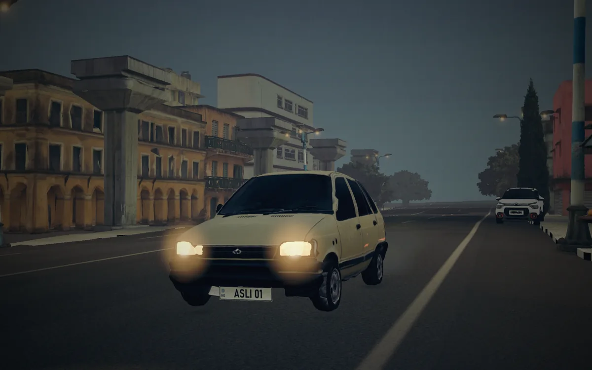
Road Trip
Fare by the kilometre. Read the potholes, mind the cows, fill up before the tank runs dry.
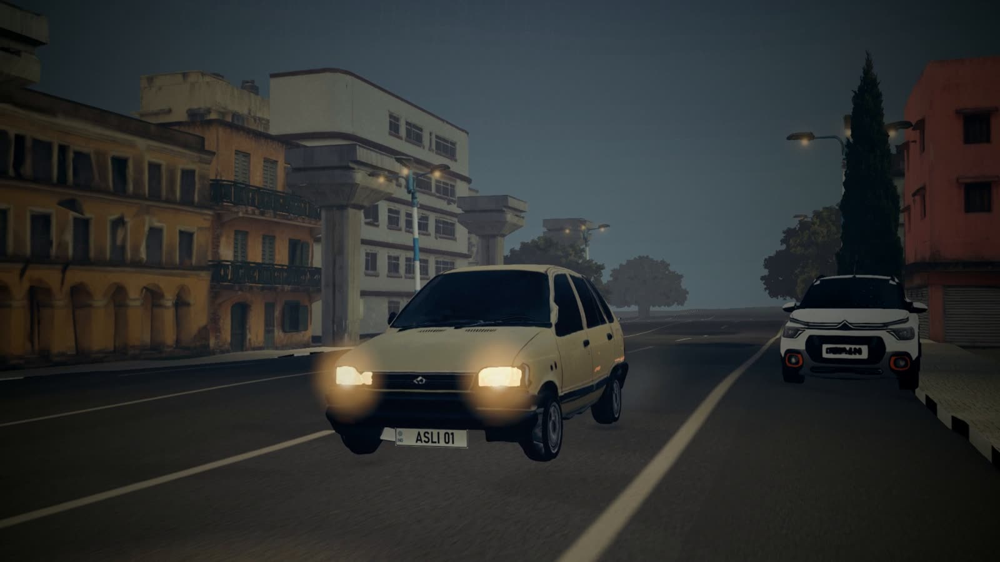
আসলি ইন্ডিয়া ড্রাইভ
Kolkata to the hills. One endless road.
Drive the real NH 12, from the mangroves of the Sundarbans through old Kolkata to the Darjeeling hills, in the light of your own clock and whatever weather the day brings. Then keep climbing: past the top, the hills never end.
The road
Built from the real highway: the river crossings, the level crossings, the pumps and tolls, the traffic that belongs to each stretch of it.
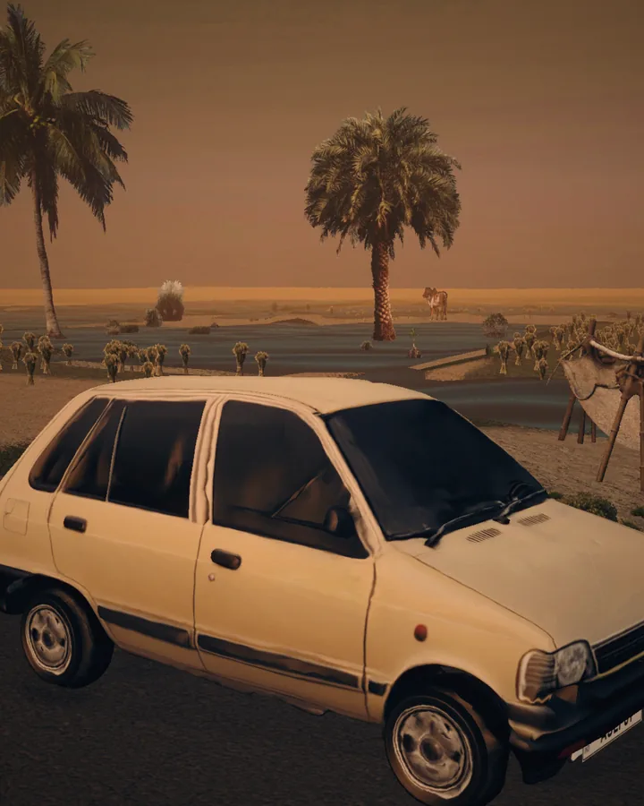
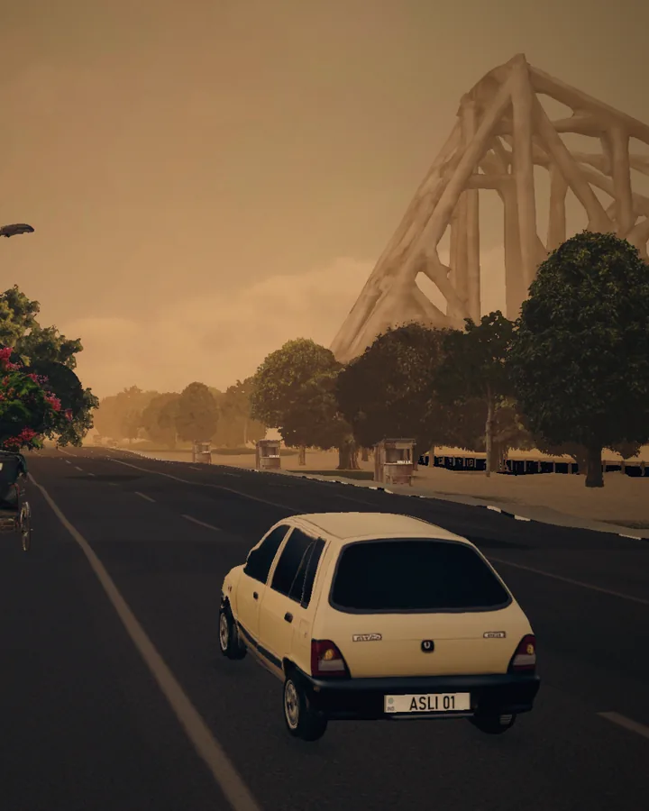
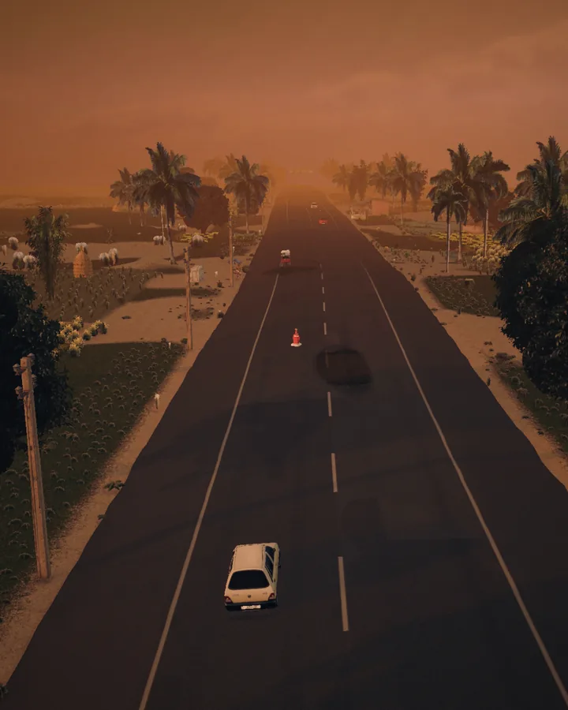
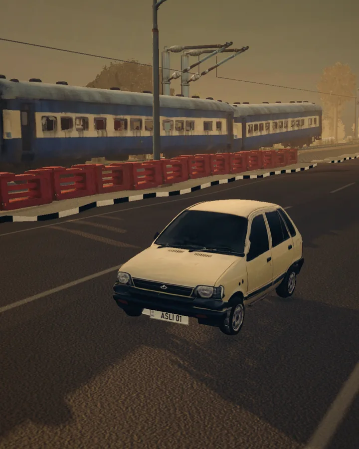
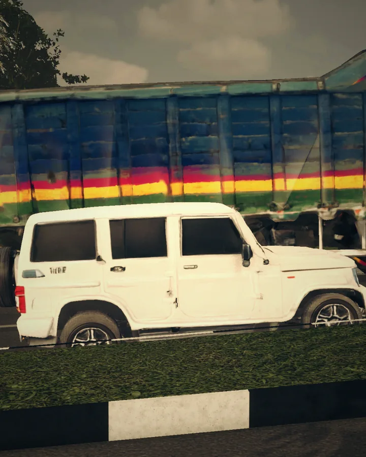
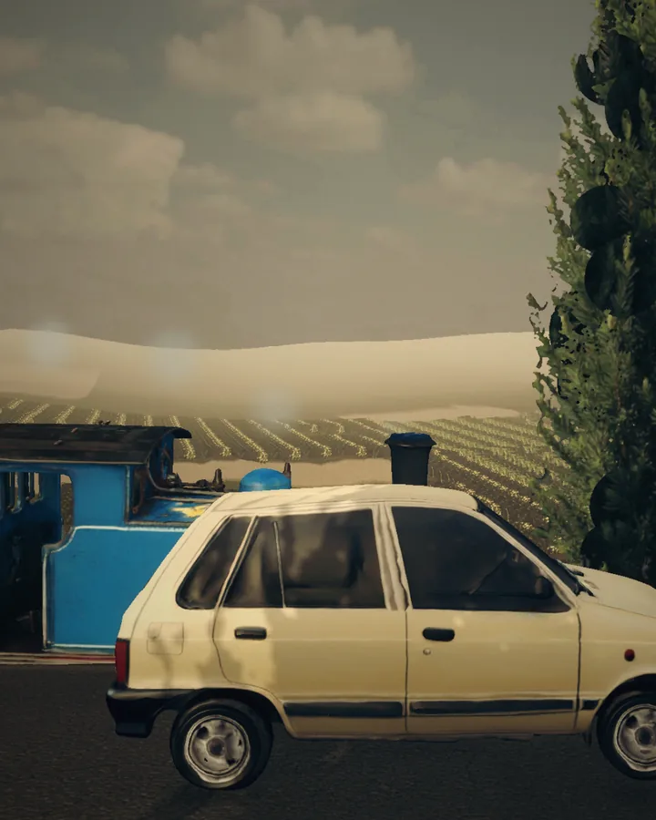
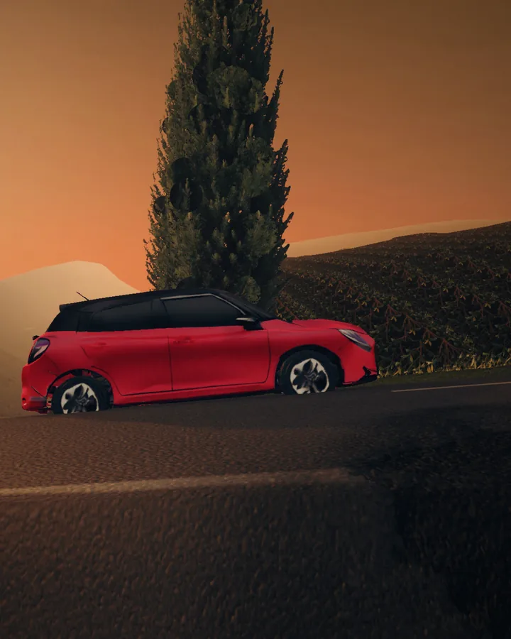
Three ways to drive

Fare by the kilometre. Read the potholes, mind the cows, fill up before the tank runs dry.
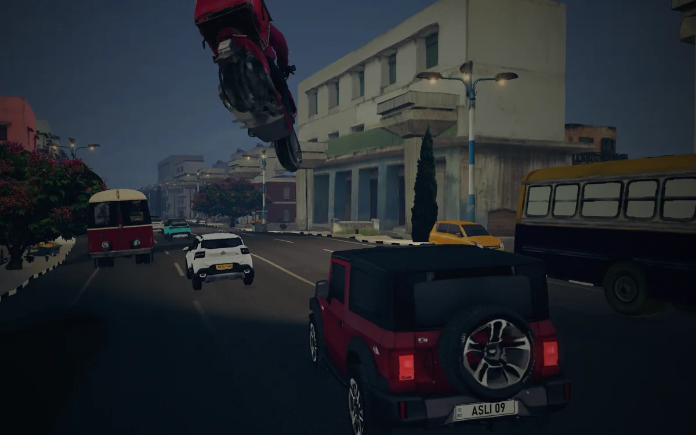
No damage, no rules. Smash everything in the lane and keep the combo alive.
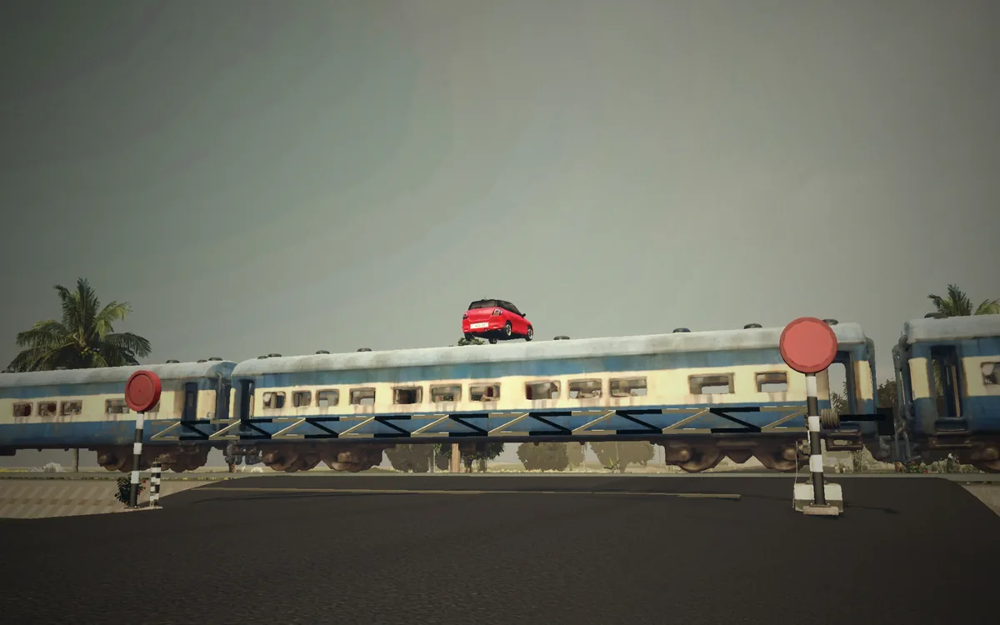
Charge the jump, time the release, clear the coaches. Miss, and the train wins.
Trailer
More states are on the road ahead: Tamil Nadu, Kerala, Maharashtra, Rajasthan, Punjab and Kashmir.